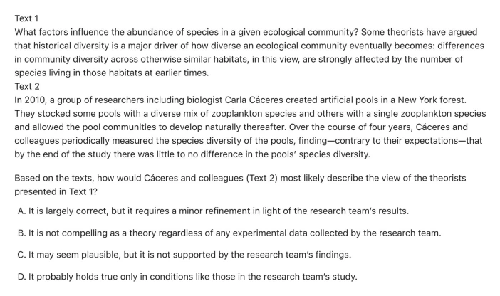

Question 1

Choose your answer.
- A
- B
- C
- D
Craft and Structure · Cross-Text Connections
1 targeted questions. Read each question here, choose an answer, then submit once for automatic checking.
Targeted practice
The complete question and choices appear inside each homework card.

Choose your answer.